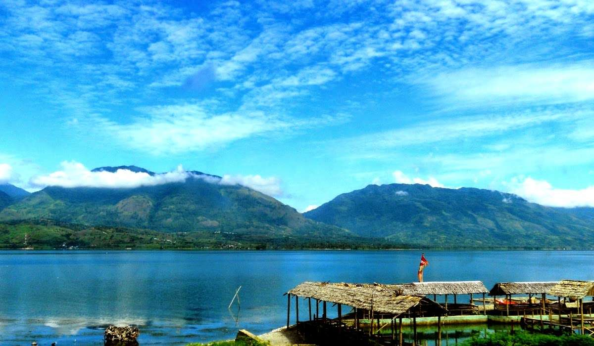
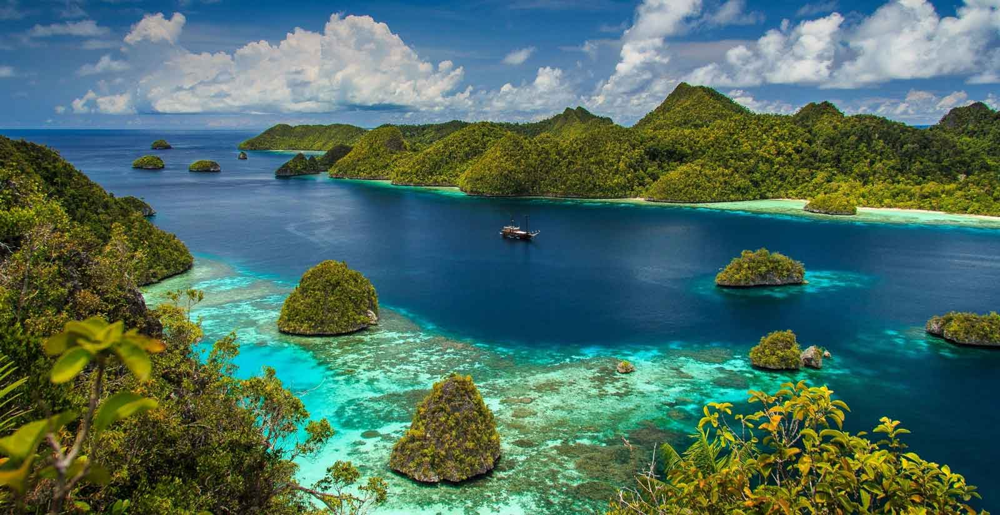

Sumatera
Golden Island
Sumatra (bentuk tidak baku: Sumatera)[1] adalah pulau keenam terbesar di dunia yang terletak di Indonesia, dengan luas 473.481 km². Penduduk pulau ini sekitar 57.940.351 (sensus 2018). Pulau ini dikenal pula dengan nama lain yaitu Pulau Percha, Andalas, atau Suwarnadwipa (bahasa Sanskerta, berarti "pulau emas"). Kemudian pada Prasasti Padang Roco tahun 1286 dipahatkan swarnnabhūmi (bahasa Sanskerta, berarti "tanah emas") dan bhūmi mālayu ("Tanah Melayu") untuk menyebut pulau ini. Selanjutnya dalam naskah Negarakertagama dari abad ke-14 juga kembali menyebut "Bumi Malayu" (Melayu) untuk pulau ini.
Jawa
Paddy Island

Jawa (bahasa Jawa: ꦗꦮ, translit. Jåwå, bahasa Sunda: ᮏᮝ) adalah sebuah pulau di Indonesia dan merupakan pulau terluas ke-13 di dunia. Dengan jumlah penduduk sekitar hampir 160 juta, pulau ini pulau berpenduduk terbanyak di dunia dan merupakan salah satu tempat terpadat di dunia. Meskipun hanya menempati urutan terluas ke-5, Pulau Jawa dihuni oleh 60% penduduk Indonesia. Angka ini turun jika dibandingkan dengan sensus penduduk tahun 1905 yang mencapai 80,6% dari seluruh penduduk Indonesia. Penurunan penduduk di Pulau Jawa secara persentase diakibatkan perpindahan penduduk (transmigrasi) dari pulau Jawa ke seluruh Indonesia. Ibu kota Indonesia, Jakarta, terletak di Jawa bagian Barat Laut (tepatnya di ujung paling barat Jalur Pantura). Jawa adalah pulau yang relatif muda dan sebagian besar terbentuk dari aktivitas vulkanik. Deretan gunung-gunung berapi membentuk jajaran yang terbentang dari timur hingga barat pulau ini, dengan dataran endapan aluvial sungai di bagian utara. Pulau Jawa dipisahkan oleh selat dengan beberapa pulau utama, yakni pulau Sumatra di barat laut, pulau Kalimantan di utara, pulau Madura di timur laut, dan pulau Bali di sebelah timur. Sementara itu di sebelah selatan pulau Jawa terbentang Samudra Hindia. Banyak kisah sejarah Indonesia berlangsung di pulau ini. Dahulu, Jawa adalah pusat beberapa kerajaan Hindu-Buddha, kesultanan Islam, pemerintahan kolonial Hindia Belanda, serta pusat pergerakan kemerdekaan Indonesia. Pulau ini berdampak besar terhadap kehidupan sosial, politik, dan ekonomi Indonesia. Sebagian besar penduduknya bertutur dalam tiga bahasa utama. Bahasa Jawa merupakan bahasa ibu dari 100 juta penduduk Indonesia, dan sebagian besar penuturnya berdiam di Pulau Jawa. Sebagian besar penduduk adalah orang-orang dwibahasa, yang berbahasa Indonesia baik sebagai bahasa pertama maupun kedua. Dua bahasa penting lainnya adalah bahasa Sunda dan bahasa Betawi. Sebagian besar penduduk Pulau Jawa beragama Islam namun tetap terdapat beragam aliran kepercayaan, agama, kelompok etnis, serta budaya di pulau ini.
Papua
Paradise Island
Papua adalah provinsi yang terletak di bagian tengah Pulau Papua atau bagian paling timur wilayah Papua milik Indonesia. Belahan timurnya merupakan negara Papua Nugini. Provinsi Papua sebelumnya bernama Irian Jaya yang mencakup seluruh wilayah Pulau Papua. Sejak tahun 2003 dibagi menjadi dua provinsi, dengan bagian timur tetap memakai nama Papua sedangkan bagian baratnya memakai nama Papua Barat (Pabar). Provinsi Papua memiliki luas 316.553,07 km2 dan merupakan provinsi terbesar dan terluas pertama di Indonesia.